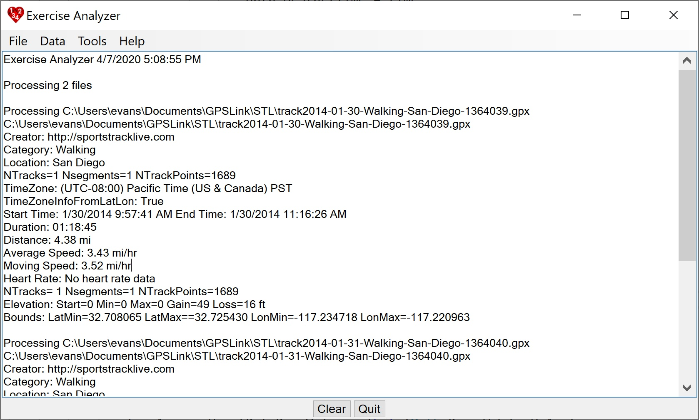

Exercise Analyzer Exercise Analyzer
Exercise Analyzer Exercise Analyzer Exercise Analyzer is a tool to extract and manipulate exercise data from GPX and TCX files.
This is a screen shot of the Exercise Analyzer interface.

Acknowledgements are at the end.
Exercise Analyzer has a number of options for dealing with GPX and TCX files. The main purpose is to process groups of files to get summary data and to make summary and weekly reports. Each file has an associated data structure with items like
| FileName | StartTime | EndTime | Distance | Duration |
| NTracks | NSegments | NTrackPoints | NHrValues | HrDuration |
| HrStartTime | HrEndTime | Creator | Category | Location |
| LatStart | LatMax | LatMin | TzId | TzInformationFromLatLon |
| LonStart | LonMax | LonMin | EleAvg | |
| EleStart | EleMax | EleMin | EleLoss | EleGain |
| SpeedAvg | SpeedAvgSimple | SpeedAvgMoving | SpeedMax | SpeedMin |
| HrAvg | HrMax | HrMin |
The sets of data from processed files can be exported as JSON files, and these can be imported to avoid re-processing. The JSON elements contain the data items above, but not the tracks themselves. These data can be used to make CSV summary files and Monthly Reports with weekly statistics. There is a Tools menu that allows you to perform various tasks on GPX and TCX files, sometimes on groups of files (for example, formatting into a readable form instead of a single line) and sometimes on specific files. Of course, a group can be a single file. The specific details of each menu operation are described below.
Any output produced is shown in the output area, which can be cleared. You can do the usual select, copy, and paste operations to use the information elsewhere.
The main data structure is a data list of the data from each of the files that is processed.
Category and Location are useful information about your exercise, but these are not part of the TCX nor GPX specification. The Weekly Report described below uses the four Categories: Walking, Cycling, Workout, and Other. Otherwise Exercise Analyzer does not use the Category or Location except to print it out.
If your files are not from Polar (https://flow.polar.com/) or SportTrackLive (http://www.sportstracklive.com/), which are treated specially, then you can add Category and Location to the data by editing the JSON file that is exported from Exercise Analyzer. (See below.) A JSON file is a human-readable text file, and this is not that hard to do.
You can also add them to the file itself if it is a GPX file. You do this by modifying the metadata. Neither of these is a standard metadata element, but Exercise Analyzer will find them if they are there. The form is:
<metadata>
....
<category>Walking</category>
<location>Swan Lake</location>
</metadata>
These elements are already included in GPX files from SportsTrackLive.
If your files are from Polar or SportsTrackLive, Exercise Analyzer can determine the Category and Location from the file names, but the file names must be of a specific form.
Polar
PyorTchaikovsky_2019-02-18_11-52-55_Walking_Swan_Lake.gpx (or .tcx)
If the name is divided into parts based on the underscores (_), then the fourth part is the Category, and the remaining parts up to the extension are the Location.
Note that the default file name format for files downloaded from Polar does not include these parts. They need to be added. Moreover Polar does not have categories for either Walking or Workout. The closest are "Other outdoor" and "Other indoor".
SportsTrackLive
track2019-01-06-Walking-Swan-Lake-2533356.gpx
In this case if the name is divided into parts separated by dash (-), then the Category is the first part after the date, and the Location is the remaining parts up to the number. This is the default format for tracks downloaded from SportsTrackLive.
Selects one or more files for processing. The results will be displayed in the output window and appended to the data list.
Saves the current data list as a CSV file with columns for time in h/m/s format (e.g. 1h 10m 29s), time in minutes, and miles for the four Categories: Walking Cycling, Workout, and Other. The CSV also has columns for total time in h/m/s format, time in minutes, and miles. It is commonly suggested that you get 200 minutes of exercise per week. You can use this to check that. You can also perform your own calculations and graphs with the data.
The CSV Weekly Report depends on having a Category for your exercise. The Categories considered specially are Walking, Cycling, and Workout. The rest gets lumped into Other.
Saves the current data list as a CSV file as is / was generated by SportTrackLive (http://www.sportstracklive.com/). This includes columns for id, category event, location, tags, year, month, week of year, start, finish, distance, duration, duration(s), calories, ave speed, ave pace, ave pace(s), ave moving speed, ave moving pace, ave moving pace(s), max speed, ave heart rate, elevation gain, elevation loss, and max elevation.
Exits the program.
Checks for exercise data that has approximately the same StartTime and allows you to select which to keep. This allows you to remove duplicate exercises that will make the summaries invalid.
Sorts the data list by StartTime.
Clears the data list. Note that clearing the output window does not clear the data list. Also note that new data is appended to the data list and does not replace it.
Gives a summary of what is in the data list.
Gives a summary of what is in the data list including file names.
Gives a list of all the file names in the data list and allows you to select the ones to show in the output window.
Exports the current data list as a JSON file. The JSON file is readable by humans. You can choose indent or unindented (a single line and not so readable but uses less storage space).
Imports a saved JSON file and appends its data to the data list.
Formats a TCX or GPX file in a form that is easily read by humans.
Formats any XML file, including TCX and GPX, in a form that is easily read by humans. The output for TCX and GPX files should be the same as above, but a different calculation method using XDocument is used.
Deletes trackpoints for a TCX file. There is a dialog where you can choose the start and end times for the deletion. These are displayed in UTC time, the same as is used in the file. Only the first Activity, Lap, and Track in the TCX file are processed.
Allows you to modify a TCX file using the latitude and longitude from a GPX file. It is a way to fix tracks that are in the wrong place owing to, say, inaccurate GPS or a GPS dropout. The trackpoints in the TCX file are modified to use the latitude and longitude from the GPX file. It does this by first matching the latitude and longitude of the start and end points from the GPX file in the TCX file and then processes trackpoints in that matched interval. It linearly interpolates the latitude and longitude values from the GPX file to the existing trackpoints in the TCX file (retaining heart rate and other information) according the the TCX time in the interval. This results in a constant speed for the processed points. This speed is the simple average speed = distance / time elapsed. This is hence a method of correcting trackpoints that will least affect the overall speed calculations.
There is a dialog to specify the times to start looking for a match to the start and end latitude and longitudes. If no match is found for the start (because the GPS was inaccurate at the start), it starts at the start time you specified. Specifying the end time avoids finding a match later in the track (in case you came back the same way). It is necessary to have good trackpoints after the ones in the GPX file.
You will have to find a GPX file that goes where you went with the TCX exercise. The time in the GPX file is not used. There is an application, Map Lines, that will allow you to draw a path that can be saved as a GPX. It requires having a calibrated map of the area so you can see where to draw.
Only the first Activity, Lap, and Track in the TCX file are processed.
This program was designed to handle TCX files from Polar Flow. These files have other information besides the latitude, longitude, and time for the trackpoints. This information includes StartTime, TotalTimeSeconds, DistanceMeters, AverageHeartRateBpm, MaximumHeartRateBpm, MaximumSpeed, and AvgSpeed for the Laps, and it includes DistanceMeters for the Trackpoints. These numbers change if the positions of the trackpoints change or if they are deleted. This option recalculates them from the trackpoints currently in the file.
What is actually contained in these elements is not specified in the TCX (TrainingCenterDatabasev2) specification. The recalculation uses values as used by Polar. The MaximumSpeed does not not agree with the Polar calculation. (It is not published how they do that calculation, but it probably involves low-pass filtering that is not done here.) Note that what is contained in these elements can be obtained from the trackpoints anyway. That is what Exercise Analyzer does. If you do not use these data and do not care if they are consistent with the data, then you do not need to do this.
This step is automatically done at the end of the delete and interpolate calculations above.
Polar Access produces GPX files with the time given in the form 2020-04-13T13:29:18.002. It is the local time, not the UTC time as required by the GPX specification. The UTC time typically ends in a Z. The corrected version of this time would be 2020-04-13T17:29:18.002Z. To determine this it is necessary to determine the time zone corresponding to the incorrect time, otherwise there is no way to know the UTC offset .Exercise Analyzer does this using the latitude and longitude to get the time zone. (In the example the actual time zone where the exercise occurred was EDT with a UTC offset of -4.)
This menu item will fix the local times to be UTC and will also add category and location elements to the metadata, if this can be determined by the name. The file is corrected in place and the modified time is retained. The corrected file will be formatted. If you are uncertain this procedure will work, you should back up your files somewhere else before running it.
In the event Polar Access fixes this issue, this menu item will only add the category and location if it can. If no changes are necessary, the file will not be modified, so it should be safe to run it on files that have already been fixed or that do not have the time issue.
Shows this page.
Brings up a dialog with information about this program.
If you are installing from a download, just unzip the files into a directory somewhere convenient. Then run it from there. If you are installing from a build, copy these files and directories from the bin/Release directory to a convenient directory.
To uninstall, just delete these files.
Exercise Analyzer uses the NuGet packages GeoTimeZone, TimeZoneConverter, TimeZoneNames, Newtonsoft.JSON, and LinqToXsd.